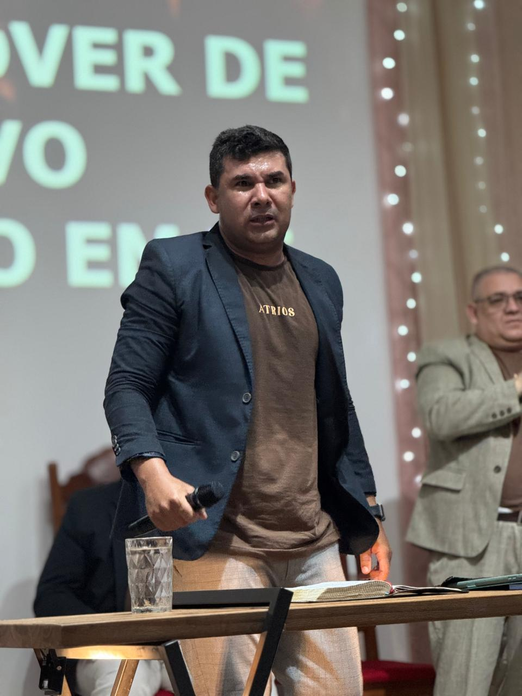
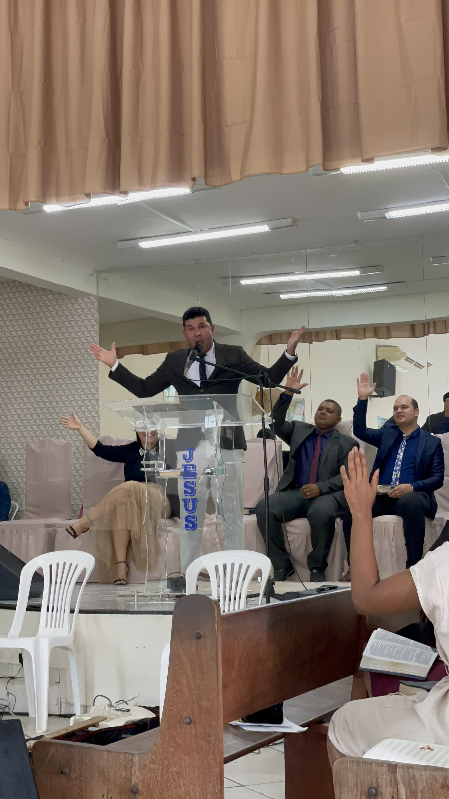
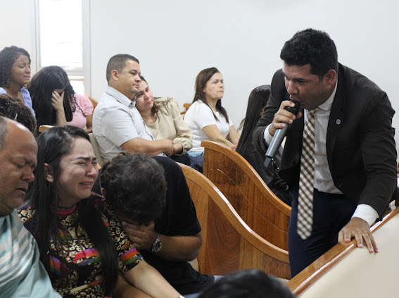
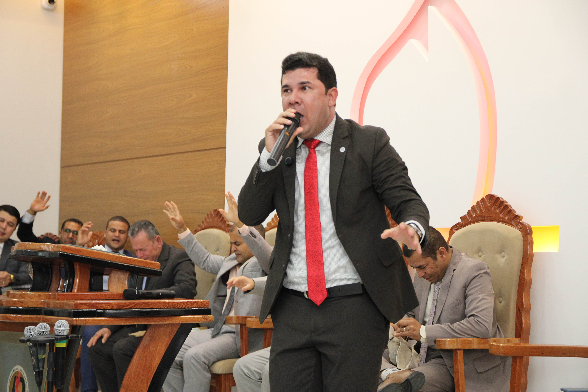

Fotos Oficiais
Imagens de alta resolução disponíveis para uso em divulgação de eventos.





Informações oficiais para imprensa, igrejas e organizadores de eventos.
Gladston Freire é pastor, pregador e expositor bíblico com mais de quinze anos de ministério. Bacharel em Direito do Trabalho e formado em Teologia, une o conhecimento bíblico profundo com uma didática clara, profética e transformadora que tem alcançado igrejas, conferências e congressos cristãos em todo o Brasil.
É autor do livro "Não Desça Mais Nenhum Degrau", obra que utiliza a trajetória de Sansão, no livro dos Juízes, para conduzir o leitor a uma reflexão profunda sobre o chamado, a missão e a importância de não retroceder no propósito de Deus.
Sua ministração é reconhecida pela profundidade teológica, pela fidelidade às Escrituras e pelo poder profético, sendo chamado a servir em igrejas locais, congressos de jovens, conferências missionárias, retiros e seminários em diversas regiões do país.
Imagens de alta resolução disponíveis para uso em divulgação de eventos.




Através da trajetória de Sansão no livro dos Juízes, Gladston Freire conduz o leitor a uma profunda reflexão sobre o chamado cristão, as quedas espirituais e a decisão de não retroceder mais no propósito de Deus.
Uma obra profética para esta geração — para quem foi chamado, vacilou, mas decidiu não descer mais nenhum degrau.
Áreas de atuação ministerial abertas a igrejas, conferências e congressos.
Ensino profundo e fiel das Escrituras, com destaque para narrativas do Antigo Testamento — Sansão, Abraão, Davi e outros.
Mensagens proféticas e desafiadoras para a geração jovem, chamando à santidade, ao propósito e ao compromisso com Deus.
A missão como chamado inegável da Igreja. Pregações que mobilizam para o evangelismo e para o cumprimento da Grande Comissão.
O chamado a uma vida íntegra diante de Deus. Como viver o Evangelho em plenitude, sem atalhos e sem degraus.
A família como fundação do Reino. Valores bíblicos para o casamento, a parentalidade e o lar cristão.
Mensagens que confrontam e edificam: por que Deus nos chama e o que acontece quando desertamos do chamado.
Para líderes, pastores e obreiros. O peso e a glória de servir a Deus com integridade e fidelidade.
Encontros de renovação, cura interior e fortalecimento da fé. Uma pausa estratégica no caminho da fé.
Amostra do ministério disponível para organizadores de eventos.
Para solicitar uma agenda, verificar disponibilidade ou obter mais informações sobre o ministério, utilize o formulário abaixo ou entre em contato diretamente.